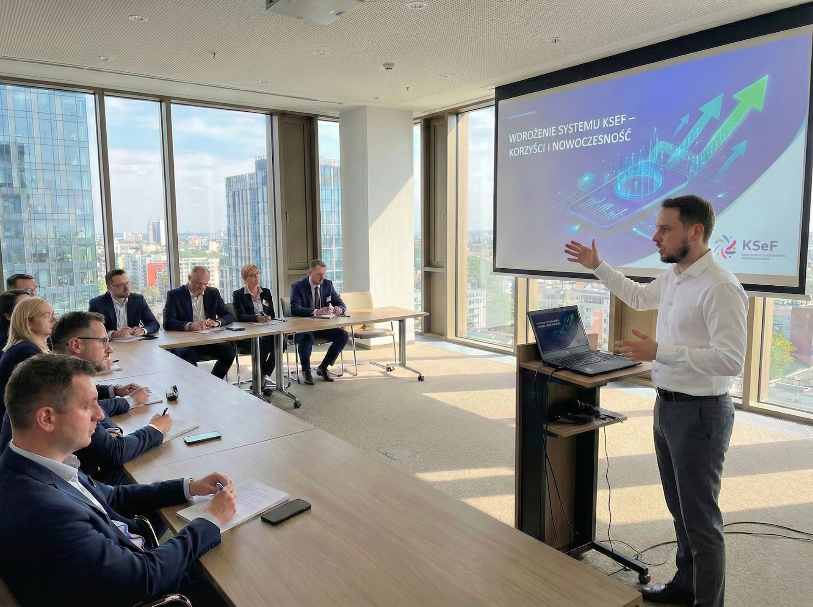

Skupiam się na technicznej stronie KSeF: konfiguracja API, generowanie tokenów, aktualizacja serwerów SQL i udrażnianie komunikacji systemowej. Dostarczam gotowe połączenie – bez zbędnego doradztwa i szkoleń.

❌ Błąd 422?
Źle wygenerowany XML FA(3), niepoprawna walidacja albo problem z API KSeF.
❌ System nie wysyła faktur?
Subiekt, Optima, system medyczny – integracja istnieje tylko „na papierze”.
❌ Księgowa rozkłada ręce?
Bo to nie problem księgowy – tylko czysto techniczny.
Dla firm korzystających z rozwiązań stacjonarnych.
Szybkie wdrożenia dla nowoczesnych biznesów.
Sprawdzam system, API, gotowość na XML FA(3).
Generuję tokeny API, konfiguruję komunikację z KSeF.
Przeprowadzamy finalną weryfikację komunikacji z bramką MF. Potwierdzam poprawne uwierzytelnienie API, sprawdzam statusy synchronizacji i przekazuję techniczną kartę wdrożenia.
Audyt + rekomendacje
od 300 zł
Pełna konfiguracja KSeF
od 1500 zł
Support i aktualizacje
od 200 zł
Jestem specjalistą IT, nie księgowym. Moim zadaniem jest sprawić, aby Twoje oprogramowanie skutecznie rozmawiało z serwerami rządowymi. Konfiguruję bezpieczne tokeny, sprawdzam certyfikaty i udrażniam wysyłkę. Zapewniam czyste, techniczne wdrożenie, pozwalając Tobie i Twojej księgowej zająć się resztą.
lub napisz bezpośrednio na WhatsApp